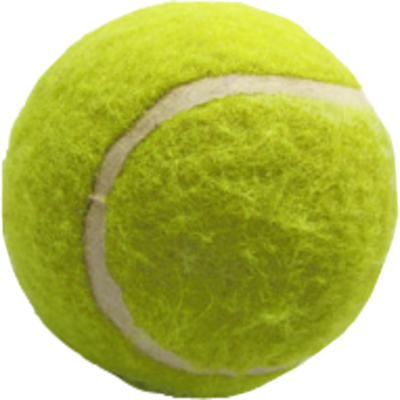

Equipment
Scoring
Top Players
Racquets.JPG)
The components of a tennis racquet include a handle, known as the grip, connected to a neck which joins a roughly elliptical frame that holds a matrix of tightly pulled strings. For the first 100 years of the modern game, racquets were of wood and of standard size, and strings were of animal gut. Laminated wood construction yielded more strength in racquets used through most of the 20th century until first metal and then composites of carbon graphite, ceramics, and lighter metals such as titanium were introduced. These stronger materials enabled the production of over-sized racquets that yielded yet more power. Meanwhile technology led to the use of synthetic strings that match the feel of gut yet with added durability.
Tennis Ball
The components of a tennis racquet include a handle, known as the grip, connected to a neck which joins a roughly elliptical frame that holds a matrix of tightly pulled strings. For the first 100 years of the modern game, racquets were of wood and of standard size, and strings were of animal gut. Laminated wood construction yielded more strength in racquets used through most of the 20th century until first metal and then composites of carbon graphite, ceramics, and lighter metals such as titanium were introduced. These stronger materials enabled the production of over-sized racquets that yielded yet more power. Meanwhile technology led to the use of synthetic strings that match the feel of gut yet with added durability.